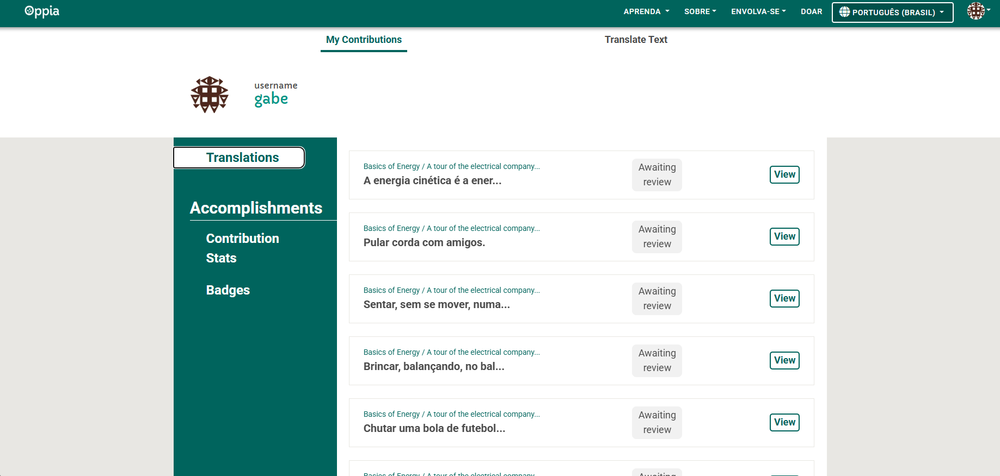
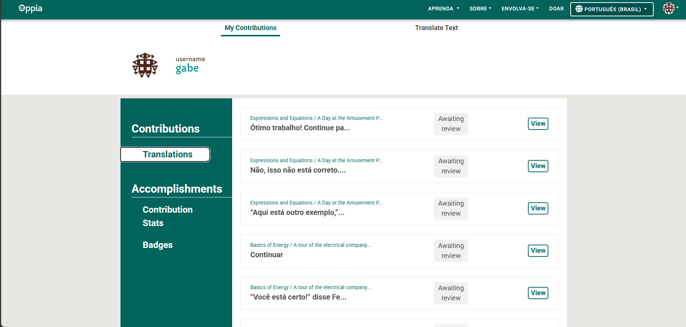
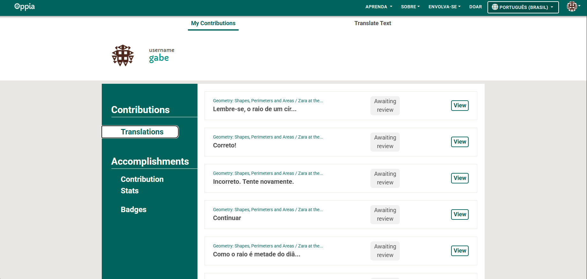

Diário de Bordo – Gabriel Moura dos Santos
Disciplina: Gestão da Configuração e Evolução de Software Equipe: Oppia Comunidade/Projeto de Software Livre: Oppia
Sprint 0 – [25/08 – 10/09]
Resumo da Sprint
O foco desta sprint inicial foi a configuração completa do ambiente de desenvolvimento do Oppia e a conclusão dos processos burocráticos para me tornar um contribuidor. Dediquei tempo ao estudo da documentação para entender a arquitetura do projeto. Após uma tentativa sem sucesso de configurar o ambiente no Windows, obtive êxito ao utilizar o Ubuntu, conseguindo rodar o backend. Também preenchi os formulários necessários para a contribuição.
Atividades Realizadas
| Data | Atividade | Tipo (Código/Doc/Discussão/Outro) | Link/Referência | Status |
|---|---|---|---|---|
| 29/08 | Leitura das documentações de desenvolvedor | Estudo | Oppia Web Developer docs | Concluído |
| 02/09 | Assinatura do CLA individual e formulário de contribuição | Formulário | - | Concluído |
| 06/09 | Tentativa de instalação do ambiente em Windows | Código | Installing Oppia (Windows) | Falhou |
| 08/09 | Configuração do ambiente de desenvolvimento em Ubuntu | Código | Installing Oppia (Linux) | Concluído |
| 09/09 | Execução do backend do Oppia localmente | Código | - | Concluído |
Maiores Avanços
- Sucesso na configuração do ambiente e na execução do projeto localmente usando Ubuntu.
- Finalização dos processos de integração com a comunidade, assinando os dois formulários necessários.
- Compreensão inicial da estrutura do projeto a partir da leitura da documentação.
Maiores Dificuldades
- A instalação do projeto no ambiente Windows não funcionou, o que consumiu tempo e exigiu a troca de sistema operacional para o desenvolvimento.
- A configuração inicial, mesmo no Ubuntu, foi um processo complexo e demorado.
Aprendizados
- A importância do sistema operacional no ambiente de desenvolvimento do Oppia, com o ambiente Linux (via Ubuntu/WSL) sendo mais estável.
- Como funciona o processo de configuração de um projeto de software livre de grande porte.
- A necessidade de seguir a documentação detalhadamente para evitar problemas de configuração.
Plano Pessoal para a Próxima Sprint
- Participar ativamente das discussões da equipe.
- Procurar por issues de "good first issue" para iniciar as contribuições de código.
- Realizar meu primeiro Pull Request (PR) para o repositório do Oppia.
Sprint 1 – [11/09 – 24/09]
Resumo da Sprint
Nesta sprint, foquei em trabalhar com uma issue real do projeto Oppia, especificamente a issue #16097, que se trata de um CI flake que vem ocorrendo desde setembro de 2022. O problema envolve um teste end-to-end que falha intermitentemente, onde o texto esperado "You must be feeling great?" não é encontrado, retornando uma string vazia. Dediquei tempo significativo estudando o código de testes, tentando reproduzir o problema localmente e investigando possíveis soluções, mas não consegui identificar a causa raiz do flake.
Atividades Realizadas
| Data | Atividade | Tipo (Código/Doc/Discussão/Outro) | Link/Referência | Status |
|---|---|---|---|---|
| 12/09 | Análise detalhada da issue #16097 e histórico de falhas | Estudo | Issue #16097 | Concluído |
| 14/09 | Estudo do código de testes webdriverio e estrutura E2E | Código | /core/tests/webdriverio_desktop/additionalEditorFeaturesModals.js |
Concluído |
| 16/09 | Tentativa de reprodução local do teste que falha | Código | - | Parcial |
| 18/09 | Investigação do código de forms.js e função readPlainText | Código | /core/tests/webdriverio_utils/forms.js:571 |
Concluído |
| 20/09 | Análise de logs do GitHub Actions para identificar padrões | Estudo | GitHub Actions logs | Concluído |
| 22/09 | Tentativas de implementação de delays e guards adicionais | Código | - | Em progresso |
Maiores Avanços
- Compreensão profunda da estrutura de testes E2E do Oppia usando WebDriverIO.
- Identificação de que o problema está relacionado a timing issues no carregamento de elementos da interface.
- Familiarização com o fluxo de CI/CD do projeto e como analisar falhas em GitHub Actions.
- Entendimento de como flakes podem impactar a produtividade de uma equipe de desenvolvimento.
Maiores Dificuldades
- A natureza intermitente do bug torna muito difícil reproduzi-lo localmente de forma consistente.
- O código de testes é complexo e envolve múltiplas camadas de abstração (WebDriverIO, Jasmine, etc.).
- Mesmo com várias tentativas de implementar delays e verificações adicionais, não consegui identificar a causa raiz.
- A issue é antiga (setembro 2022) e já teve várias tentativas de correção, sugerindo alta complexidade.
Aprendizados
- Como funciona a estrutura de testes end-to-end em projetos de grande escala.
- A importância de testes estáveis para manter a produtividade da equipe de desenvolvimento.
- Técnicas de debugging em ambientes de CI/CD e análise de logs de falhas.
- A complexidade de resolver flakes em testes automatizados, especialmente quando envolvem timing.
- Como analisar histórico de issues e entender o contexto de problemas recorrentes.
Plano Pessoal para a Próxima Sprint
- Buscar outras issues mais adequadas ao meu nível de experiência atual no projeto.
- Focar em contribuições que envolvam código mais direto, evitando inicialmente problemas de flakes complexos.
- Continuar estudando a arquitetura do projeto para futuras contribuições mais efetivas.
- Documentar os aprendizados sobre debugging de testes para ajudar outros contributors.
Sprint 2 – [25/09 – 08/10]
Resumo da Sprint
Nesta sprint, foquei no estudo da issue #16640, um E2E flake relacionado à visibilidade do campo de entrada de nome de usuário que vem ocorrendo desde novembro de 2022. O problema envolve um erro "Username input is not visible" em testes de wipeout (exclusão de conta). Infelizmente, enfrentei sérias dificuldades técnicas com meu ambiente de desenvolvimento após atualizar pacotes do Ubuntu, o que quebrou completamente minha configuração local. Tentativas de usar Windows e WSL também falharam, limitando minha capacidade de implementar soluções práticas.
Atividades Realizadas
| Data | Atividade | Tipo (Código/Doc/Discussão/Outro) | Link/Referência | Status |
|---|---|---|---|---|
| 26/09 | Análise detalhada da issue #16640 e histórico de ocorrências | Estudo | Issue #16640 | Concluído |
| 28/09 | Estudo do código de wipeout.js e workflow de testes | Código | /core/tests/webdriverio_desktop/wipeout.js |
Concluído |
| 30/09 | Investigação da função _addExplorationRole no workflow.js | Código | /core/tests/webdriverio_utils/workflow.js:272 |
Concluído |
| 02/10 | Tentativa de reconfiguração do ambiente após atualização do Ubuntu | Código | - | Falhou |
| 04/10 | Tentativas de configuração no Windows | Código | - | Falhou |
| 06/10 | Tentativas de configuração via WSL | Código | - | Falhou |
Maiores Avanços
- Compreensão do problema de visibilidade em elementos de interface em testes E2E.
- Estudo detalhado do fluxo de wipeout (exclusão de contas) e seus testes associados.
- Análise do histórico de ocorrências do flake desde 2022, identificando padrões de falha.
- Entendimento de como elementos dinâmicos podem causar flakes em testes automatizados.
Maiores Dificuldades
- Quebra completa do ambiente de desenvolvimento após atualização de pacotes do Ubuntu.
- Impossibilidade de testar soluções localmente devido aos problemas de configuração.
- Falhas nas tentativas de reconfiguração em diferentes plataformas (Windows, WSL).
- Limitação para contribuições práticas devido aos problemas técnicos de ambiente.
Aprendizados
- A importância de manter backups ou snapshots do ambiente de desenvolvimento.
- Como atualizações de sistema podem quebrar configurações complexas de desenvolvimento.
- A necessidade de ambientes containerizados para projetos com muitas dependências.
- Como analisar flakes relacionados à visibilidade de elementos em testes E2E.
- A importância de ter múltiplas opções de ambiente de desenvolvimento.
Plano Pessoal para a Próxima Sprint
- Priorizar a resolução dos problemas de ambiente de desenvolvimento.
- Considerar uso de containers Docker para isolar o ambiente do Oppia.
- Buscar issues que possam ser trabalhadas sem necessidade de execução local.
- Documentar problemas de configuração para ajudar outros desenvolvedores.
- Explorar contribuições em documentação enquanto resolvo questões técnicas.
Sprint 3 – [09/10 – 22/10]
Resumo da Sprint
Nesta sprint, devido aos persistentes problemas de ambiente de desenvolvimento e dificuldades com issues de CI flakes, decidi contribuir para o Oppia de uma forma diferente mas igualmente valiosa: através de traduções. Foquei em traduzir conteúdo educacional do inglês para o português, contribuindo para tornar a plataforma mais acessível para falantes de português. Para não ficar sem contribuição para o projeto, adaptei minha forma de colaborar conforme minhas possibilidades técnicas atuais.
Atividades Realizadas
| Data | Atividade | Tipo (Código/Doc/Discussão/Outro) | Link/Referência | Status |
|---|---|---|---|---|
| 10/10 | Exploração das opções de contribuição não-técnicas no Oppia | Estudo | Oppia Contributor Guidelines | Concluído |
| 12/10 | Início das traduções de conteúdo educacional | Tradução | Plataforma Oppia | Concluído |
| 14/10 | Continuação das traduções - lições de energia | Tradução | Plataforma Oppia | Concluído |
| 18/10 | Documentação das traduções realizadas com evidências | Documentação | \fotos\image1.png | Aguardando revisão (mantenedor) |
Maiores Avanços
- Contribuição efetiva para o projeto Oppia através de traduções de conteúdo educacional.
- Tornar o conteúdo mais acessível para a comunidade de falantes de português.
- Adaptação criativa para contribuir apesar das limitações técnicas do ambiente.
- Documentação adequada das contribuições realizadas com evidências fotográficas.
Maiores Dificuldades
- Persistência dos problemas de ambiente de desenvolvimento das sprints anteriores.
- Impossibilidade de contribuir com código devido às questões técnicas não resolvidas.
- Necessidade de encontrar formas alternativas de contribuir para o projeto.
- Limitação nas opções de contribuição devido às barreiras técnicas.
Aprendizados

- Projetos de software livre oferecem múltiplas formas de contribuição além do código.
- Traduções são uma forma valiosa de tornar projetos mais inclusivos e acessíveis.
- A importância de adaptar-se às circunstâncias e encontrar maneiras criativas de contribuir.
- Como documentar adequadamente contribuições não-técnicas para fins acadêmicos.
- A relevância de não desistir de contribuir mesmo diante de obstáculos técnicos.
Plano Pessoal para a Próxima Sprint
- Continuar explorando oportunidades de tradução no Oppia.
- Tentar mais uma vez resolver os problemas de ambiente de desenvolvimento.
- Buscar mentoria técnica para superar as barreiras de configuração.
- Considerar contribuições em documentação e wiki do projeto.
- Explorar outras formas de contribuição não-técnica disponíveis no projeto.
Sprint 4 – [23/10 – 05/11]
Resumo da Sprint
Nesta sprint, continuei contribuindo com traduções para o Oppia, focando em uma lição mais complexa que continha expressões matemáticas e piadas. O desafio foi adaptar o humor e as descrições de imagens para o contexto brasileiro, mantendo o valor educacional e o engajamento dos estudantes. Esta experiência me permitiu explorar aspectos mais avançados da localização de conteúdo educacional.
Atividades Realizadas
| Data | Atividade | Tipo (Código/Doc/Discussão/Outro) | Link/Referência | Status |
|---|---|---|---|---|
| 24/10 | Seleção de lição com conteúdo matemático e humor para tradução | Estudo | Plataforma Oppia | Concluído |
| 26/10 | Tradução de expressões matemáticas e adaptação para contexto brasileiro | Tradução | Plataforma Oppia | Concluído |
| 28/10 | Adaptação de piadas e humor para cultura brasileira | Tradução | Plataforma Oppia | Concluído |
| 30/10 | Tradução e adaptação de descrições de imagens | Tradução | Plataforma Oppia | Concluído |
| 02/11 | Documentação das traduções com evidências visuais | Documentação | \fotos\image2.png | Concluído |
Maiores Avanços
- Tradução bem-sucedida de conteúdo complexo envolvendo matemática e humor.
- Adaptação cultural de piadas mantendo o valor educacional e engajamento.
- Desenvolvimento de habilidades de localização além da simples tradução literal.
- Contribuição contínua para tornar o Oppia mais acessível para estudantes brasileiros.
Maiores Dificuldades
- Desafio de adaptar piadas e humor para diferentes contextos culturais.
- Necessidade de manter precisão matemática enquanto adapta explicações.
- Balanceamento entre fidelidade ao conteúdo original e adaptação cultural.
- Garantir que as descrições de imagens fossem apropriadas para o público brasileiro.
Aprendizados

- A complexidade da localização de conteúdo educacional que vai além da tradução simples.
- A importância da adaptação cultural para manter o engajamento dos estudantes.
- Como traduzir humor mantendo o propósito educacional do conteúdo.
- A necessidade de considerar diferenças culturais ao descrever elementos visuais.
- O valor de contribuições de localização para projetos educacionais globais.
Plano Pessoal para a Próxima Sprint
- Continuar explorando lições com diferentes níveis de complexidade para tradução.
- Buscar feedback da comunidade sobre as traduções realizadas.
- Investigar outras formas de contribuição não-técnica no projeto.
- Tentar novamente resolver questões de ambiente para contribuições técnicas futuras.
- Documentar melhores práticas para tradução de conteúdo educacional.
Sprint 5 – [06/11 – 19/11]
Resumo da Sprint
Nesta sprint final, foquei no desenvolvimento do trabalho final da disciplina. Devido às persistentes dificuldades com CI/CD no GitLab, optei por realizar o projeto no GitHub (https://github.com/thegm445/teste), mas documentei instruções detalhadas no GitLab sobre o trabalho. O projeto envolveu a implementação de práticas de DevOps e configuração de pipelines, mas as limitações técnicas do ambiente GitLab impediram a execução completa dos workflows.
Atividades Realizadas
| Data | Atividade | Tipo (Código/Doc/Discussão/Outro) | Link/Referência | Status |
|---|---|---|---|---|
| 12/11 | 17/11 | Documentação de instruções no GitLab sobre o processo | Documentação |
Maiores Avanços
- Conclusão do trabalho final utilizando GitHub como plataforma principal.
- Implementação bem-sucedida de pipeline CI/CD com GitHub Actions.
- Documentação clara das instruções e processo no GitLab para referência.
- Entrega do projeto dentro do prazo estabelecido apesar das limitações técnicas.
Maiores Dificuldades
- Impossibilidade de executar CI/CD no GitLab devido a problemas de configuração.
- Necessidade de adaptar o trabalho para uma plataforma diferente da originalmente planejada.
- Limitações de tempo para resolver questões técnicas complexas do GitLab.
- Balanceamento entre entregar o trabalho e resolver problemas de infraestrutura.
Aprendizados
- A importância de ter planos alternativos quando enfrentamos barreiras técnicas.
- Como diferentes plataformas de DevOps (GitHub vs GitLab) têm suas particularidades.
- A flexibilidade necessária para adaptar projetos conforme limitações do ambiente.
- A importância da documentação mesmo quando não conseguimos implementar completamente.
- Como problemas de infraestrutura podem impactar significativamente o desenvolvimento.
Sprint 6 – [20/11 – 03/12]
Resumo da Sprint
Nesta sprint, continuei contribuindo com traduções para o Oppia, focando em uma lição de geometria. Foi uma tradução direta sem grandes complexidades, mantendo o padrão de contribuições não-técnicas que venho desenvolvendo ao longo das sprints anteriores.
Atividades Realizadas
| Data | Atividade | Tipo (Código/Doc/Discussão/Outro) | Link/Referência | Status |
|---|---|---|---|---|
| 01/12 | Tradução de lição de geometria | Tradução | Plataforma Oppia | Concluído |
Maiores Avanços

- Continuidade das contribuições de tradução para o projeto Oppia.
- Tradução de conteúdo de geometria para português brasileiro.
Maiores Dificuldades
- Nenhuma dificuldade significativa nesta sprint.
Aprendizados
- Consolidação da experiência em tradução de conteúdo educacional.
- Familiaridade crescente com a plataforma e processo de contribuição.
Plano Pessoal para a Próxima Sprint
- Finalizar contribuições da disciplina conforme cronograma.